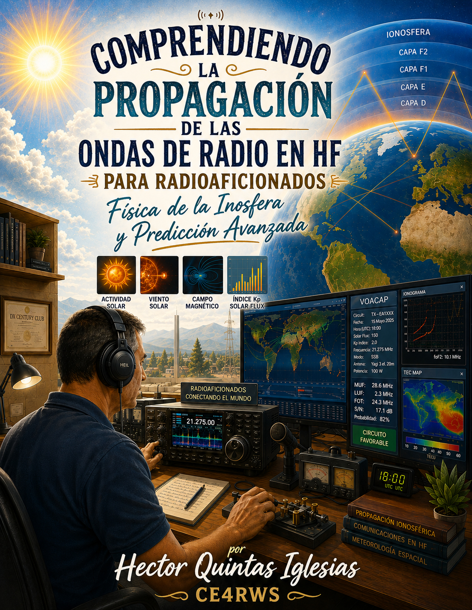
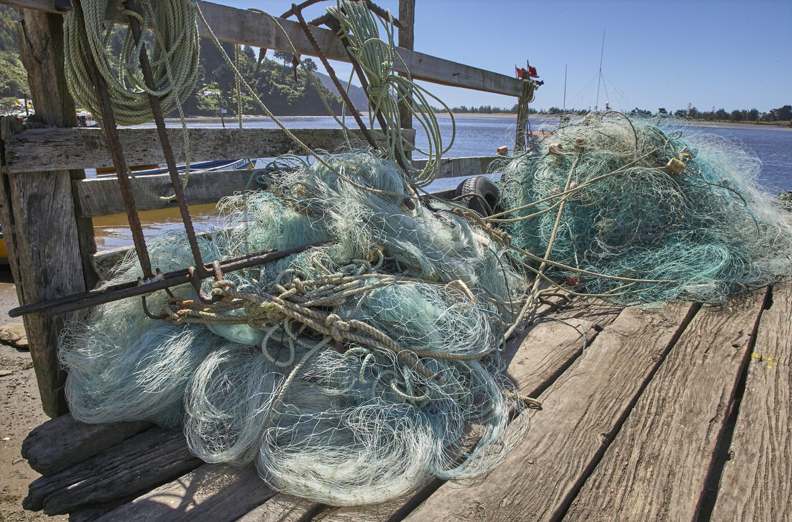
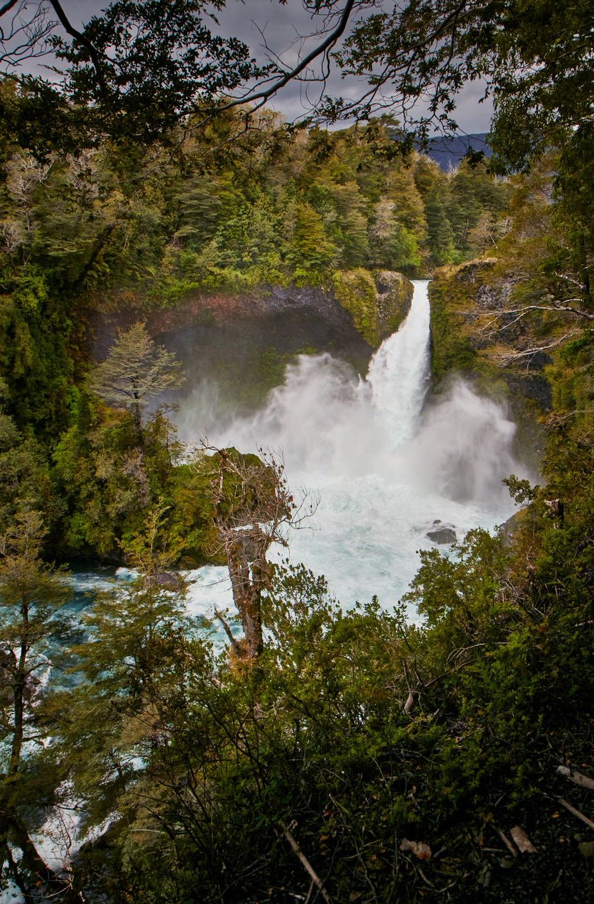
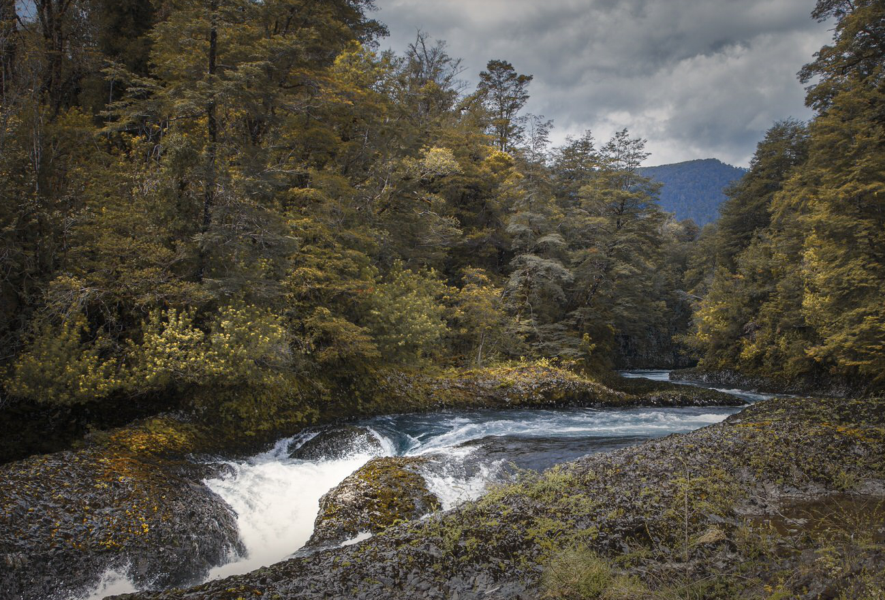
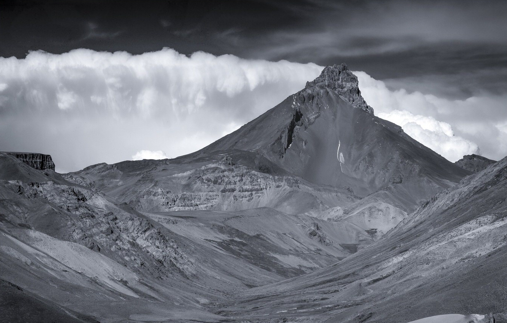

Sobre mí
Soy Héctor Quintas Iglesias, escritor, radioaficionado y fotógrafo, conocido en el mundo de la radio por mi indicativo CE4RWS. Desde hace muchos años, la radioafición me ha permitido explorar las ondas, estudiar la propagación, descubrir lugares distantes y comprender mejor esa extraordinaria comunicación que puede unir a personas separadas por miles de kilómetros.
About Me
I am Héctor Quintas Iglesias, a writer, radio amateur and photographer, known in the radio world by my callsign CE4RWS. For many years, amateur radio has allowed me to explore the airwaves, study propagation, discover distant places and better understand the extraordinary communication that can connect people separated by thousands of kilometres.
Radioafición
La radioafición es una forma extraordinaria de explorar el mundo sin necesidad de verlo. A través de las ondas de radio es posible establecer comunicaciones a grandes distancias, estudiar la propagación, experimentar con antenas y descubrir cómo las condiciones de la atmósfera pueden transformar una señal débil en una comunicación clara y distante.
Mi interés se centra especialmente en la propagación de las ondas, el DX, las antenas, la escucha de onda corta y la exploración de las diferentes bandas de radio. Cada señal recibida cuenta una pequeña historia y cada contacto representa una oportunidad para aprender algo nuevo.
Amateur Radio
Amateur radio is an extraordinary way to explore the world without having to see it. Through radio waves, it is possible to communicate across great distances, study propagation, experiment with antennas and discover how atmospheric conditions can transform a weak signal into a clear and distant communication.
My main interests include radio propagation, DX, antennas, shortwave listening and exploring the different radio bands. Every signal received tells a small story, and every contact is an opportunity to learn something new.
Mis libros
La escritura es otra forma de explorar y compartir aquello que he aprendido a lo largo de los años. En mis libros reúno conocimientos, experiencias e investigaciones relacionadas principalmente con la radioafición, las antenas, la propagación de las ondas, la historia de la radio y la tecnología.
Esta colección reúne mis diferentes proyectos editoriales, escritos con la intención de acercar estos temas tanto a radioaficionados experimentados como a quienes desean descubrir este fascinante mundo.
My Books
Writing is another way of exploring and sharing what I have learned over the years. My books focus mainly on amateur radio, antennas, radio propagation, radio history and technology.
This collection brings together my different publishing projects, created to share knowledge and experiences with both experienced radio amateurs and readers who are discovering this fascinating world.

Comprendiendo la propagación de las ondas de radio en HF
Español · Propagación · HF
Ver libro en Amazon
Fotografía
La fotografía es otra forma de observar el mundo, detener el tiempo por un instante y conservar aquello que normalmente pasa frente a nuestros ojos. Me interesa especialmente capturar paisajes, lugares y momentos que transmiten una historia más allá de la imagen.
Photography
Photography is another way of observing the world, capturing a moment in time and preserving what might otherwise pass unnoticed. I am especially interested in landscapes, places and moments that tell a story beyond the image itself.




Contacto
Si deseas conocer más sobre mi actividad como radioaficionado, escritor y fotógrafo, puedes visitar mis espacios y proyectos vinculados a este sitio.
Mi perfil de radioaficionado en QRZ
Contact
If you would like to learn more about my work as a radio amateur, writer and photographer, you can visit the spaces and projects connected to this website.
My amateur radio profile on QRZ
CE4RWS · Chile